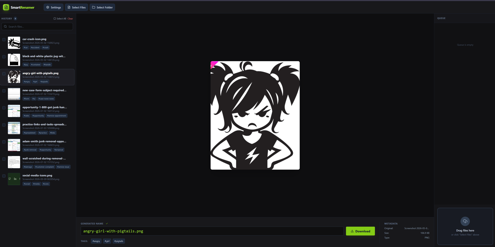
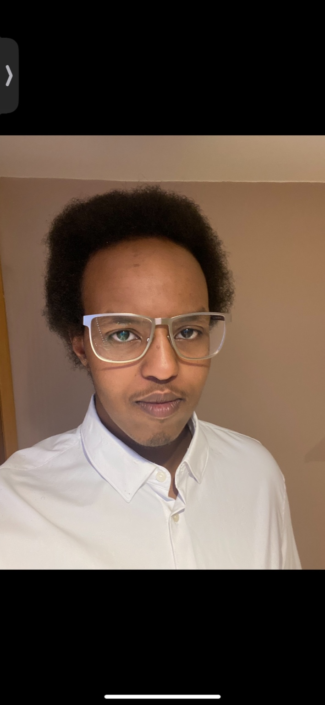
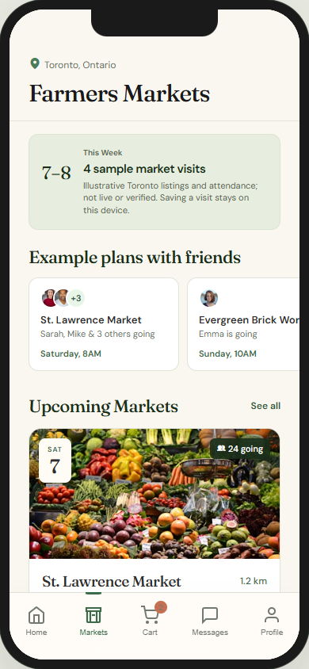

Smart Image Renamer
Make an AI filename suggestion something a person can inspect before changing a real file.
Self-directed desktop tool · working MVP and later interface explorationRead the case study
Working desktop toolInteraction designer in Toronto. I make working prototypes around the moments when people decide, act, and need a way back.
Explore my work
I’m an Interaction Design graduate from George Brown College. I design interfaces and build prototypes to explore how people understand and use them.
I’m interested in the details between screens: the feedback, decisions, and ways to recover when something goes wrong.
I use AI coding tools to help build and debug prototypes, while directing the interaction and visual design.
Read my résuméMake an AI filename suggestion something a person can inspect before changing a real file.
Self-directed desktop tool · working MVP and later interface explorationRead the case study
Working desktop toolExplore how someone could choose a local market, inspect sample details, and save a visit on this device.
Self-directed mobile interaction prototypeRead the case study
Market planning concept - sample listingsHow I turn an interface idea into something people can use and review.